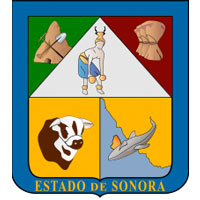

Existen algunas conjeturas sobre el origen del nombre Sonora. Una es que proviene de la palabra Señora, que fue el primer nombre dado a la región por los exploradores españoles, encabezados por Diego de Guzmán, debido a que arribaron al río Yaqui el 7 de octubre de 1533, día de Nuestra Señora del Rosario. Como los nativos no podían pronunciar la letra 'ñ', Señora derivó en Sonora. Una segunda conjetura dice que los indígenas vivían en chozas de cañas llamadas en su lengua sonot. Los españoles cambiaron esa palabra a sonora y luego extendieron el nombre a toda la provincia. Durante el Plioceno, la separación de Baja California y el desarrollo del golfo de California redujeron de manera drástica la humedad que entraba a Sonora lo que llevó a una aridez regional severa tanto en Sonora como en Baja California. Esto creó comunidades de matorral xerófilo y el desarrollo de especies únicas para esta región. Noventa por ciento del estado tiene condiciones desérticas o áridas. Los otros tipos de clima están restringidos a las áreas del estado con altitudes mayores como el área de Yécora, las montañas al norte de Cananea, y una franja a lo largo del sureste del estado con la frontera con Chihuahua. La temperatura alta promedio varía entre 12,7 ℃ en Yécora a los 23,8 ℃ en el municipio de Navojoa. La temperatura baja promedio varía entre 5.9 en Yécora a 15,0 ℃ en el municipio de Hermosillo. En invierno llegan masas de aire frío del norte al estado, esto puede producir temperaturas congelantes y vientos fuertes por la noche en los lugares más elevados, pero la temperatura puede volver a ser hasta durante el día. Casi nunca ocurren temperaturas congelantes en las tierras bajas. En febrero de 2011, el gobierno mexicano registró una temperatura baja histórica en Yécora de –12 ℃. La precipitación es por temporada y ocurre casi siempre en las elevaciones más altas. En las tierras calientes áridas o semiáridas, la evaporación supera por mucho la precipitación. La zona más árida de México, el gran desierto de Altar, se encuentra en este estado. El este del estado, dominado por la Sierra Madre Occidental, tiene temperaturas menos extremas y con relativamente más lluvia debido a la altitud. El estado cuenta con una gran variedad de especies de flora, predominan los matorrales en la planicie costera, al noroeste y región central. Hay selvas en la parte sureste del estado, seguidas por el matorral subtropical; los pastizales se ubican al norte y en los límites con Chihuahua se localizan los bosques templados. En las regiones secas se encuentran una gran gama de plantas xerófilas, como los sahuaros, y árboles como el mezquite, el palo blanco, el palo fierro, el palo verde y el torote, ya que tienen sistemas de adaptación como crecer a la orilla de riachuelos y en las faldas de los cerros, no ser muy altos para contrarrestar la fuerza del viento y tener la madera muy dura y raíces largas que penetran en la tierra hasta encontrar un depósito de agua. La mayoría de los bosques se localizan en el noreste del estado y cubren cerca de 6.4% del estado Esta área es la que tiene la temperatura más fría. La deforestación es un problema significativo, en especial después de 1980, debido al incremento en la tasa de corte de árboles. Muchos árboles de mezquite también han desaparecido por la demanda de combustibles locales y el mercado del carbón de mezquite en México y los EUA. La mayor parte del norte de México sufre de una de las tasas de desertificación más altas del mundo debido a la degradación de la tierra en las áreas áridas y semiáridas, lo que conlleva la pérdida de la productividad biológica y económica, pero el proceso es más grave en Sonora que en Sinaloa, por ejemplo. La degradación de la tierra ocurre por la limpieza de tierra para la agricultura, la plantación de pasto no nativo de la región para pastar, la tala de bosques, el sobre-consumo de vegetación natural y la salinización de suelo por la irrigación. Como en otras partes de México, la cocina sonorense es básicamente una mezcla de las influencias indígenas y españolas. Cuando los españoles avanzaron al norte del Valle de México, encontraron que la dieta del lugar era más simple, con lo básico de maíz, frijoles y calabaza, pero sin la variedad extra que existía en el sur. Por esta razón, esos españoles influenciaron la manera en la que se desarrolló esa dieta. Trajeron a Sonora cosechas europeas de harina, res, productos lácteos, puerco y más, así como platillos e ingredientes del centro y sur de México, tales como tortillas, más variedades de chiles y tamales. La cultura del vaquero ha sido un aspecto importante de la cultura de Sonora desde la época colonial y gran parte de la cocina está basada en lo que los vaqueros comieron en sus inicios, incluso aunque la mayoría de los sonorenses ya no trabajan al aire libre. La cocina sonorense no está limitada a su geografía actual. Arizona, en especial en el área sur cerca de la frontera, tiene una cocina que también es rica en harina, queso y res; así fue llevada por los españoles, a lo que alguna vez fue parte de Sonora. Ambos estados continúan con la tradición del vaquero. Debido a la situación de Sonora como un estado fronterizo, su cocina también ha recibido una influencia significativa de los EUA. El principal atractivo turístico de Sonora son sus playas, poblaciones, además del desierto que se une al mar y a la sierra. La diversidad de sus ecosistemas hace posible que en el Estado puedan realizarse gran variedad de actividades de recreación y turismo como buceo, pesca, nado, senderismo, ciclismo de montaña, turismo cinegético y turismo ecológico. Las playas más conocidas son San Carlos, Puerto Peñasco y Bahía de Kino. San Carlos, y su playa Los Algodones es una de las zonas más visitadas en la costa sonorense. San Carlos tiene una gran variedad de vida marina en sus costas, lo que la convierte en un lugar popular para la pesca deportiva y el buceo. Algunos yaquis y seris cerca de Guaymas y el Cerro del Tetakawi viven la de pesca.
